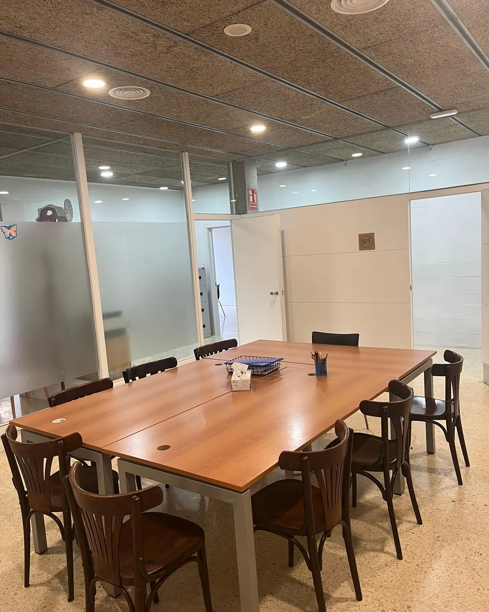

Entrevista d'accés
Valorem si el grup és adequat i quin encaixa millor.
Espais conduïts per professionals on el fet de compartir amb altres persones que travessen situacions semblants és, en si mateix, part del procés.
Què són
Els grups tenen un nombre reduït de participants, un tema o objectiu comú i una durada definida. Els condueix un o dos professionals que sostenen l'espai i el fan segur.
Serveixen per reduir l'aïllament, aprendre d'altres experiències, assajar noves maneres de fer i rebre un retorn honest en un context de confiança.
Es poden combinar amb teràpia individual quan és recomanable.

A qui s'adreça
Viure una situació que sembla que ningú més entén.
Practicar la comunicació, els límits i la gestió del conflicte.
Dol, ansietat, etapes vitals, acompanyament a familiars.
Reforçar el treball individual amb l'experiència del grup.
Com funciona
Valorem si el grup és adequat i quin encaixa millor.
Es fixen el marc, la freqüència i els acords de confidencialitat.
Treball guiat pels professionals que condueixen l'espai.
Revisió del recorregut i orientació sobre com continuar.
[PENDENT] — grups actius, nombre de sessions i tarifes.
Un primer pas
Escriu-nos i t'informem dels grups disponibles i de com accedir-hi.
Demanar hora